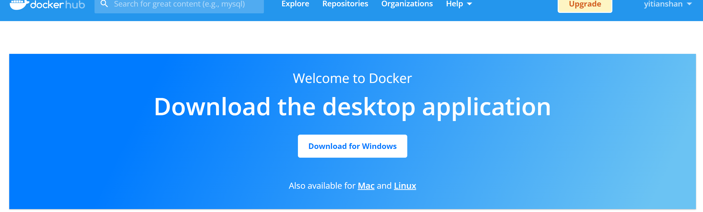
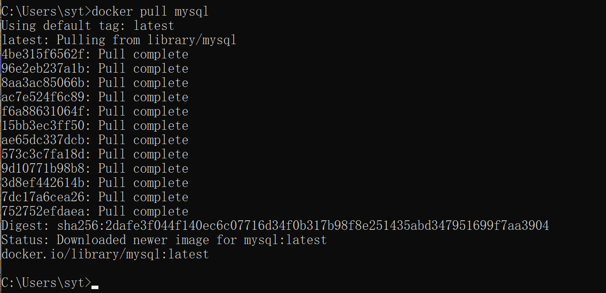
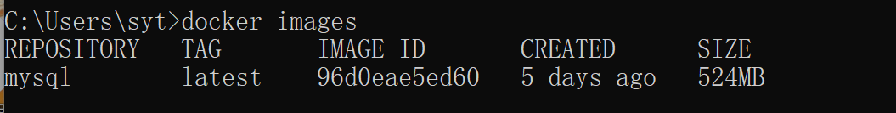
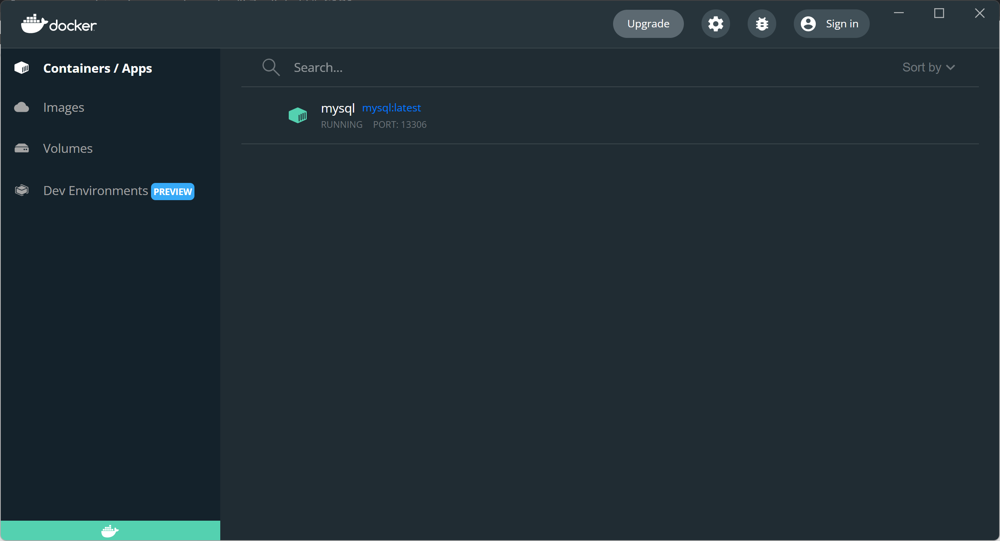

GORM 的安装与基本使用
GROM 的 go get
安装命令:
go get -u gorm.io/gorm
go get -u gorm.io/driver/sqlite
Windows Docker
MySQL 的安装
Docker 安装
Docker 官网 点击注册/登录，即会跳转到该页面。

点击下载 Win 版本。
由于 Docker win 版本双击安装之后，会自动安装到 C 盘，采取以下操作，链接到 D 盘。
- 先创建
D:\Program Files\Docker目录。 - 用管理员身份打开 cmd 窗口，运行如下命令：
mklink /j "C:\Program Files\Docker" "D:\Program Files\Docker"
- 用管理员身份运行下载好的安装包。
注意：安装包也需要用管理员进行运行安装，否则安装过程会报错“找不到目录”等问题。
MySQL 镜像
Docker 拉取 MySQL 镜像
在 CMD 中输入：
docker pull mysql
默认拉取最新版 MySQL 。拉取成功后，会显示 Pull complete。


使用镜像
查看目前存在的 images 命令：
docker images
发现没有有一个名为 mysql 的镜像，也就是刚才拉取的镜像。

现在，可以使用该镜像创建一个容器实例。步骤如下：
在本地的 13306 端口运行 MySQL 容器实例: 名为 mysql，root 用户名密码为 root123 的命令如下：
docker run --name mysql -p 13306:3306 -e MYSQL_ROOT_PASSWORD=root123 -d mysql:latest
该命令 --name 后面自定义容器的名字，-p 是本地端口号，3306是 MySQL 的端口号，主机的 13306 端口和 mysql 容器的 3306 端口进行映射，外部可通过主机 ip+13306 访问到 mysql 容器，-d 后面是 mysql：tag。
通过观察上图，可以发现 TAG 是 latest ，输入命令：


登录访问当前的容器：
docker exec -it mysql bash
成功进入 Docker：

进入 Docker 后就可以使用 MySQL 了，登陆之后使用 Linux 命令启动 MySQL。
使用 MySQL
在 Docker 中，使用 MySQL 的命令如下：
mysql -h localhost -u root -p
会提示输入密码，输入密码后:

就可以使用 MySQL 了。
参考这篇笔记。
MySQL WorkBench 等工具远程连接 MySQL
授予 MySQL 远程连接的权限：

MySQL Workbench 点击 MySQL Connection 后边的 ⊕ ，Hostname 为 主机 IP，Port 里面输入曾设置过的 13306 端口号，由于是本地启动的 Docker 采用回路地址 localhost : 127.0.0.1 为 Hostname，点击连接：

为了安全起见，可以在 MySQL 命令行中使用如下的命令修改远程连接数据库的密码：
ALTER USER 'root'@'%' IDENTIFIED WITH mysql_native_password BY '123456';
该例子中，修改为了 123456。
输入密码，连接成功！
Navicat 连接，点击右上角的 Connection，建立新的连接：

输入连接的主机号和端口号，输入密码，连接成功：

更新: 2022-05-03 23:35:46
原文: https://www.yuque.com/xiaoshan_wgo/codingnotes/lk7wdh